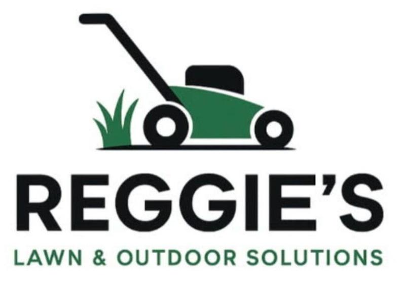

Mowing and clean edges
Mowing for front and back lawns with edge work around paths, driveways, fences and garden borders.

0437 844 844Local lawn mowing
Reliable mowing and edge work for homes, rentals, nature strips and one-off yard tidy-ups. Reggie's helps family homes, newer estates, rental properties and compact suburban yards throughout Wyndham Vale.
Service in Wyndham Vale
Reggie's can help with small and medium lawns, nature strips, rental properties and garden edges. Every job is quoted for the actual work, access and site conditions.
Mowing for front and back lawns with edge work around paths, driveways, fences and garden borders.
Arrange repeat visits to keep fast-growing lawns and nature strips manageable through the season.
Get a quote for longer grass, rental-property handovers and yards that need extra work before regular mowing begins.
Obligation free quote
Quotes consider lawn size, grass height, slope, obstacles, access and whether clippings need to be removed. Photos help Jack assess the job accurately.
Local coverage
Reggie's works in Wyndham Vale and nearby areas including Manor Lakes, Mambourin, Werribee and Mount Cottrell, subject to the approximately 25 km service area from Eynesbury.
Questions
Yes. Regular mowing can be arranged based on the property, season and how quickly the grass grows.
Yes. Include the nature strip when requesting your quote so the full area can be allowed for.
Yes. Send photos of the grass height, yard size and access so Jack can quote for the extra time and equipment required.
Book a quote
Call Jack or email job photos, your address or suburb, access details and preferred timing.